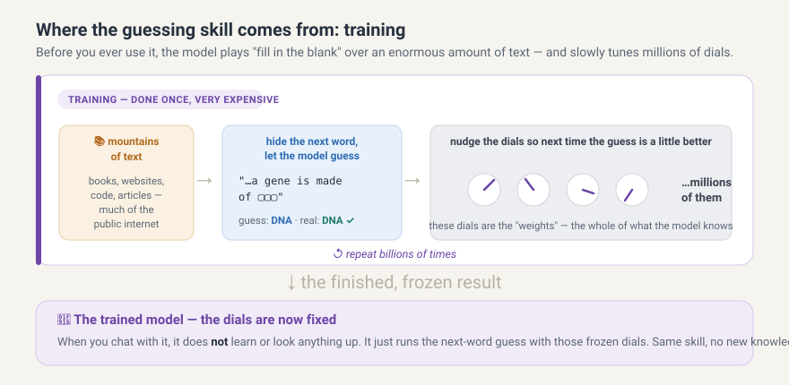

5 Meet the assistant
You have just seen that every program is, in the end, a file of instructions for a CPU, and that the whole history of programming has been the invention of friendlier and friendlier ways to write those instructions without writing raw machine code by hand. The newest of those ways is not a language at all. It is a conversation. You describe what you want in ordinary English, and something on the other side turns your description into Python. That something is what this note is about.
It is worth being honest about why we start here rather than saving the assistant for the end of the course. You already have access to one, and so does everybody else. Pretending otherwise for fourteen weeks would only mean you learn to use it badly, on your own, without anyone to tell you where it goes wrong. So we bring it in on day one, deliberately and under rules, and we spend the term building the one thing that makes it useful rather than dangerous, which is your ability to tell a good answer from a plausible one. This note covers what the assistant is, where it lives, what you are and are not allowed to ask of it at each point in the term, and the single habit that everything else in the course is built to protect.
What the assistant actually is
An AI assistant is a program. It is a file on a disk, loaded into memory, carried out step by step by processors, in exactly the way the previous note described. There is no exception being made here, no new kind of thing in the world. What is unusual about it is not the machinery but the size and the origin of its instructions.
An ordinary program, of the kind you will write this term, contains rules that a person sat down and wrote. If a program converts Celsius to Fahrenheit, somewhere inside it a human being typed the formula. The program does what it does because someone decided, line by line, what it should do. This is the kind of program the whole course is about, and it is the kind of program you can read, reason about, and check by tracing it in your head.
A language model is not built that way. Nobody wrote the rules by which it answers. Instead, somebody wrote a much smaller program with a very large number of adjustable numbers in it, and then a process, which we will come to, adjusted those numbers automatically until the program became good at one narrow task. The numbers are called parameters, or weights, and a current model has billions of them. They are just numbers, stored on a disk like everything else, and when you ask a question they are loaded into memory and multiplied and added together in a fixed pattern, billions of times over, to produce the answer. Nobody, including the people who built it, can point at parameter number four million and say what it is for. The behaviour lives in the whole pile at once.
So the honest description is this. An assistant is an enormous arithmetic machine whose numbers were tuned by an automatic process, running on hardware that is doing nothing more exotic than what a Turing machine does, only very fast. Everything surprising about it comes from scale and from training, not from magic.
What the model is made of
The narrow task the numbers are tuned for is startlingly simple. Given a stretch of text, predict what comes next. That is the whole job. Everything else the assistant appears to do, answering questions, writing code, explaining an error message, translating a sentence, is that one prediction repeated over and over.
The text is not handled as words, and this detail matters more than it sounds. Before anything else happens, the text is chopped into pieces called tokens, which are roughly word fragments. A common word is usually one token, a rare word is several, and punctuation and spaces are tokens too. A DNA sequence such as ATGCGTTAG gets carved into pieces that have nothing to do with codons, because the chopping was designed for English prose and not for genomes. This is exactly why an assistant is unreliable when you ask it to count the letters in a sequence or to reverse a string by hand. It is not looking at letters. It is looking at chunks it inherited from a scheme built for text, which is also why such questions are far better answered by three lines of Python that you wrote yourself.
Each token is turned into a list of numbers, and those lists flow through a stack of layers that all do the same two things. They mix information between positions in the text, so that a word can be interpreted in the light of the words around it, and then they push each position through a small pile of arithmetic on its own. The mixing step is called attention, and the architecture built out of it is called a transformer, introduced in 2017. Attention is what lets the model connect a pronoun to the noun it refers to forty words earlier, or connect a function call to the definition of that function further up your file. A large model stacks dozens of such layers, and the output of the last one is a score for every token the model knows, saying how likely each one is to come next.
The programs that build and run these stacks are written in Python, which is the same language you are learning this term. The two frameworks that do nearly all of this work are PyTorch, which came out of Meta and is now the default in most research and in most current large models, and JAX, which came out of Google and is used for others. TensorFlow, also from Google, was the dominant framework a decade ago and is still in use. All of them let a person describe a network as ordinary Python code while the actual arithmetic runs underneath in heavily optimised C++ on graphics processors, which are chips originally designed to draw video game scenes and which turn out to be very good at multiplying large grids of numbers. So the picture is layered in a way that should now feel familiar. Python on top, describing the shape of the model, compiled code underneath doing the multiplication, and machine code under that.
How the model is trained
Training is the process that turns a pile of random numbers into something that can finish your sentences.
It begins with text, and with a great deal of it. Models are trained on very large collections of writing gathered from the public internet, from books, from documentation, and from public code repositories. The quantity is measured in trillions of tokens. Nobody labels any of it, and this is the trick that made the whole field possible. The text labels itself, because for any position in any document the correct next token is simply the token that actually comes next. Every sentence ever written is a free exercise with the answer already attached.
The training loop is then easy to state. Show the model a stretch of text with the continuation hidden. Let it produce its scores for what comes next. Compare its prediction with the token that truly came next and compute a single number, called the loss, that measures how wrong it was. Then work backwards through every layer to determine, for each of the billions of parameters, whether nudging it up or down would have made the loss a little smaller. That backwards calculation is called backpropagation, and it is calculus rather than magic. Finally, nudge every parameter a tiny amount in the direction that helps. That is one step of gradient descent. Repeat this a very large number of times.

The whole cycle is laid out in Figure 5.1, and the part worth dwelling on is the end of it. When the training stops, the parameters are frozen. The model you talk to is not still learning, and nothing you tell it during a conversation changes a single one of those numbers.
No single step teaches the model anything you would recognise. But after enormous numbers of steps over enormous amounts of text, being good at predicting the next token starts to require the model to have absorbed a great deal about the text itself. To predict the end of a sentence about the citric acid cycle, it helps to have absorbed how people write about the citric acid cycle. To predict the line after for i in range(10): it helps to have absorbed how Python programs are shaped. Grammar, idiom, factual association, and code structure are all soaked up as a side effect of getting better at one prediction task. This is the central and slightly uncomfortable fact about these systems. Their apparent understanding is a by-product of a statistical exercise, not a goal anybody programmed in.
That first stage is expensive. It runs for weeks or months across thousands of processors, and it is the reason only a handful of organisations train the largest models. What comes out of it is a model that continues text convincingly but does not particularly behave like an assistant. It will happily continue your question with three more questions, because that is a plausible continuation of a page of questions.
Two further stages turn it into something you can talk to. In the first, the model is trained further on a much smaller and carefully assembled collection of examples showing a request followed by a good response, which teaches it that a question should be followed by an answer. In the second, people compare pairs of candidate answers and say which one is better, those judgements are used to train a second model that scores responses, and the assistant is then tuned to produce responses that score well. This is where its helpful and agreeable manner comes from, and it is worth knowing that agreeableness was optimised for directly. A model tuned to produce answers that people like is, among other things, a model tuned to sound convincing. That is not the same thing as being right, and the gap between the two is the space this whole course operates in.
How it answers you
When you type a question, nothing is looked up. There is no database inside the assistant, no index of facts, no copy of the documentation it can consult. Your text is chopped into tokens, pushed through the same fixed arithmetic described above, and out the other end comes a score for every possible next token. One token is chosen, usually not the single highest-scoring one but a sample drawn from among the likely candidates, which is why asking the same question twice can give you two different answers. The chosen token is added to the end of the text, and the whole thing is run again to produce the token after that, and again, and again, until the answer is complete. An answer of two hundred words is two hundred or so passes through the entire model.
Everything the model can see while doing this is the text in front of it, which is your conversation so far. This is called the context window, and it has a limit. Text that scrolls out of it is gone, and a new conversation starts with nothing. The assistant has no memory of you between sessions unless a product deliberately stores something and pastes it back in. When it appears to remember what you said earlier, it is because the earlier part of the conversation is being fed through it again with every single token it produces.
Notice what is absent from this description. At no point does anything check whether the sentence being produced is true. There is no separate step where the model consults reality, compares its claim against a source, or flags that it is unsure. Truth is not a stage in the pipeline. What the process optimises is plausibility, meaning the next token that fits the pattern of text like this. Most of the time, in well-worn territory, plausible and correct coincide, because the text it learned from was mostly correct. Out at the edges, they come apart, and the failure has a characteristic and dangerous shape. The model does not become hesitant when it leaves what it knows. It produces a confident, fluent, well-formatted answer containing a function that does not exist, an argument that was never added to the library, or a citation to a paper nobody wrote. The confidence is uniform because confidence was never what was being computed.
Code is a special case, and it is the reason this course can work at all. Assistants are unusually good at code, because there is a great deal of public code to learn from, because programs are far more repetitive and patterned than prose, and because a very large fraction of what programmers write has been written before. But the far more important point is that code, unlike an opinion or a summary, can be run. A claim about what a function returns is settled in one second by calling it. A claim about what your data contains is settled by printing it. This is the lever the entire course rests on. The assistant produces a plausible answer, and the machine tells you whether it was a correct one.
Where the assistant lives
For this course, the assistant lives in your browser, as Microsoft 365 Copilot, which you already have free access to through your university account. Inside it sits a second mode worth knowing about from day one, the Study and Learn agent, which behaves less like a machine that answers and more like a patient teaching assistant that asks you questions back. You will meet it properly in a later week. For now, know that it exists, and that the word assistant from this point on can mean either mode depending on what a given exercise asks for.
VS Code, by contrast, stays an AI-free space for the whole course. No Copilot extension, no inline suggestions, nothing typing over your shoulder while you write. This is not nostalgia for a harder way of working. You cannot learn to judge code you did not write until you have spent real time writing code yourself, one substitution and one reduction at a time, and an assistant humming along inside your editor is exactly the thing that would let you skip that part. There is a second and more practical reason. An assistant that completes your line before you have finished thinking it removes the small, productive struggle in which the learning actually happens, and it does so invisibly, so you cannot tell afterwards which parts you understood and which parts you merely accepted. Keep the two spaces separate. The browser is where you consult the assistant, and the editor is where you think.
What you are allowed to ask of it, and when
Not every exercise permits the same amount of help, and the course marks this explicitly rather than leaving it to guesswork. Exercises that involve the assistant carry a small badge naming the role it is allowed to play, and the roles form a ladder that gets more permissive as the term goes on and your judgment gets sharper. The steps of that ladder, in order, are Explainer, Translator, Illustrator, Comparer, Drafter, Unreliable Narrator, Worker, Collaborator, and Delegate.
Early on, a badge such as AI: Explainer means the assistant may explain something to you, an error message or a line of code, but you still do the deciding and the running yourself. In the middle of the term, roles such as Comparer and Drafter let it produce something you then have to judge, which is a much harder skill and one you cannot practise before you can read code fluently. Later still, a badge such as AI: Delegate means you may hand it a real piece of work, provided you have already learned to specify it precisely and to verify what comes back. You never get a badge you have not earned the skills for yet. The ladder is cumulative, and each step assumes everything below it.
Some exercises carry no AI badge at all but instead the marker SOLO, which means exactly what it says: no assistant, do it yourself first. Solo exercises are not a punishment, and they are not a test of your honesty either. They are where you build the very judgment the badges later ask you to spend. An exercise you hand to an assistant in week two is an exercise whose skill you will be missing in week ten, when you are supposed to be using that skill to catch the assistant making a mistake.
The logbook
Once a week, you will write one entry in your logbook, a short and honest note about something the assistant got right, something it got wrong, and how you knew which was which. That last part carries most of the weight. Noticing that an answer was wrong is worth something, but being able to say what made you check, and what settled it, is the actual skill. Entries can be short, three or four sentences is plenty, but they should be specific. A note saying the assistant was confused about dictionaries is worth much less than one saying it claimed a particular method existed, that you looked it up and it did not, and that running the code raised an AttributeError and confirmed it.
By the end of the term the logbook will be a record of your own growing skill at telling a plausible answer from a correct one, which is a more useful thing to have at the end of a course than almost anything else you will produce.
There is one rule the whole course turns on, and it is worth stating on its own. The AI predicts, and the machine, or a test, proves. Every badge, every solo marker, and every widget in this course exists to put that rule into practice. Whatever the assistant tells you, in whatever role, treat it as a claim to be checked and not as a fact to be filed away. Nothing that follows makes sense without this.
Exercise 5-1
AI: Explainer
Ask the assistant, in the browser, what a license badge and a solo marker are for in a course, without telling it anything about this course specifically. Read its guess. Then compare it against what this note just told you. Where did it match, and where did it just produce something plausible-sounding that happened to be wrong for our purposes? This is the smallest possible version of the whole term: ask, read, and check against the real thing.
Exercise 5-2
AI: Explainer
Ask the assistant how many times the letter G appears in the sequence ATGGCGTAGGATCGGA, and write down the answer it gives. Then count them yourself on paper. If the two disagree, ask the assistant to explain how it arrived at its number, and see whether the explanation is any more trustworthy than the answer was. Then ask it why a language model finds this kind of question difficult, and check its explanation against what this note said about tokens. You have just watched, in the smallest possible case, the exact failure mode you will spend the term learning to catch.
For your logbook this week, note which badge you are most looking forward to earning, and which one makes you the most nervous, and why.